Арабский халифат, его расцвет и распад
Амина, это история о том, как огромная держава развалилась на части, а её учёные, поэты и мастера прославились на весь мир.
Представь огромный двор, где живут семьи из десятка разных стран. У каждой свой язык, свои праздники и свои блюда. Управлять таким двором трудно: соседи спорят, кто главный, а старшие по подъездам начинают командовать сами и перестают слушаться управляющего.
Зато какой это двор для любопытных! Один сосед учит считать, другой рассказывает сказки своей страны, третий показывает, как вырезать узоры. Всё смешивается, и получается что-то новое и красивое.
Так было и в Арабском халифате. Он раскинулся от Атлантического океана до Индии и Китая. Споры о власти раскололи мусульман, а наместники-эмиры со временем стали править сами, и халифат распался. Но учёные, поэты и мастера разных народов создали культуру, которой восхищаются до сих пор.
Главный вопрос параграфа: что оказалось разрушительным для Арабского халифата, но благоприятным для развития мусульманской культуры? Держи в голове картинку с большим двором. Вот четыре главные части темы:
У каждого шага написано, на какой странице учебника искать. Внизу шага есть «Подробнее, как в учебнике»: там всё, что есть на этих страницах, ничего не пропущено. Сначала учи по коротким шагам, а перед уроком открой «подробнее».
Надпись вверху шага подскажет, откуда он: синяя — из учебника, золотая — задание учебника, оранжевая — сверх учебника (пересказ, словарик, игры, самопроверка). В «Содержании» шаги так же разбиты на группы.
Подробнее, как в учебнике · с. 61
- Главный вопрос параграфа: что оказалось разрушительным для Арабского халифата, но благоприятным для развития мусульманской культуры?
- Слова параграфа: великий визирь, сунниты, шииты, каллиграфия, медресе, мечеть. Люди: Али, Аль-Хорезми, Ибн Сина (Авиценна), Омар Хайям, Фирдоуси. Все слова есть в словарике.
- Иллюстрация в начале параграфа: «Наместник халифа и проситель». Миниатюра, XIII век. Подпись: в VII–VIII вв. образовалось огромное государство арабов — Арабский халифат. Владения халифата раскинулись от берегов Атлантического океана до границ Индии и Китая. Картинка — на шаге 6.
- Таблица дат параграфа разобрана на следующем шаге.
- Параграф завершает главу II «Мусульманская цивилизация в VII–XI вв.». После него в учебнике идут «Итоги главы» (с. 71–72), они разобраны на шагах 24–25.
Лента времени
Это все даты из таблицы в начале параграфа, сверху вниз от ранних к поздним. Нажми на дату, чтобы прочитать, что случилось. Красные помечены «Россия», как в учебнике.
Учебник пишет: на востоке от Аравии натиск Омейядов сдерживали хазары. Граница между арабами и Хазарским каганатом проходила по земле нынешнего Дагестана.
Дербент арабы называли Баб аль-Абваб — «Ворота ворот». В VIII веке он стал северной крепостью халифата.
Годы жизни учёных и поэтов пригодятся в игре «Кто раньше?».
Ещё даты, которые встречаются в тексте параграфа
- VII–VIII вв. — образовался Арабский халифат (подпись к миниатюре, с. 61).
- 656–661 гг. — правление халифа Али (п. 1).
- 751 г. — сражение на реке Талас: мусульмане победили китайские войска (п. 2).
- Начало IX в. — Арабский халифат начал распадаться на части (п. 2).
- IX в. — Багдад стал центром мусульманской науки, там был Дом мудрости (п. 3).
- 780–850 гг. — годы жизни математика аль-Хорезми (п. 3).
- 786–809 гг. — Харун ар-Рашид правил в Багдаде (отрывок из статьи И. Фильштинского, с. 70).
- 935–1020 гг. — годы жизни поэта Фирдоуси (п. 4).
- 980–1037 гг. — годы жизни Ибн Сины (п. 3).
- 1048–1131 гг. — годы жизни Омара Хайяма (п. 4).
- Вторая половина XIX в. — англичанин Э. Фицджеральд перевёл и опубликовал книгу стихов Омара Хайяма (с. 66).
- Даты в подписях к иллюстрациям: миниатюры XIII в. (с. 61, 65); персидская рукопись «Шах-наме» XV в. (с. 65); портрет Омара Хайяма, 1905 г. (с. 66); мечеть Куббат ас-Сахра, VII в. (с. 67); картина «Интерьер соборной мечети в Кордове», 1880 г. (с. 67); Альгамбра, XII в. (с. 68); шкатулка, X в. (с. 68).
1Сунниты и шииты
Первые халифы завоевали много земель (ты читала об этом в § 5). Выросшее государство стало называться Арабский халифат. Захваченные земли объявили общими для всей мусульманской общины, но на деле ими распоряжались халиф и его приближённые из Мекки и Медины.
В халифате началась борьба за власть. Халифа Усмана убили его противники. Против следующего халифа, Али (656–661), выступил наместник Сирии: он считал Али причастным к гибели Усмана. Было несколько сражений, но никто не победил. В итоге Али убили заговорщики, позже погибли и его сыновья.
Спор о власти расколол мусульман на два течения:
Шииты
Халифами могут быть только потомки Али, то есть родственники пророка Мухаммеда.
Сунниты
Главой мусульман может стать любой достойный человек, избранный народом.
Раскол существует и сегодня. В исламском мире больше суннитов. Шииты живут в основном в Иране, Ираке, Азербайджане и Бахрейне.
Что такое раскол?
Раскол — это когда одна община разделяется на части, потому что люди по-разному отвечают на важный вопрос. Здесь вопрос был такой: кто имеет право стать главой всех мусульман? Шииты и сунниты ответили на него по-разному. А Сунну ты помнишь из § 5: это рассказы о делах и изречениях пророка Мухаммеда.
Подробнее, как в учебнике · с. 61–62, п. 1
- Пункт 1 «Сунниты и шииты». Расширившееся в результате завоеваний первых халифов государство стало называться Арабским халифатом. Захваченные земли объявлялись общей собственностью всей мусульманской общины. В действительности же ими распоряжались халиф и его приближённые, выходцы из Мекки и Медины.
- В халифате началась борьба за власть. Противники халифа Усмана убили его в собственном доме. Капли крови заместителя пророка попали на листы Корана, и этот экземпляр книги стал особо почитаемым.
- Против халифа Али (656–661) выступил наместник Сирии. Он не признал власть Али, считая его причастным к гибели Усмана. Произошло несколько сражений, в которых ни одна из сторон не смогла победить. В итоге Али был убит заговорщиками. Позднее погибли и его сыновья.
- Дальнейшая борьба за власть привела к расколу в мусульманской общине. Сторонники одного течения — шииты («приверженцы») — считали, что халифами могут быть только потомки Али, то есть родственники пророка Мухаммеда. Другое течение образовали сунниты, их название — от Сунны. Главой мусульман они видели любого достойного человека, избранного народом.
- Раскол в исламе существует и по сей день. В исламском мире преобладают сунниты. Сторонники шиизма живут в основном в современных Иране, Ираке, Азербайджане и Бахрейне.
- Вопросы учебника после пункта 1: чем была вызвана борьба за власть в Арабском халифате? Кто такие шииты и сунниты? Есть ли они сегодня?
2Омейяды и Аббасиды
После Али халифом стал тот самый наместник Сирии. Столицей он сделал город Дамаск и основал династию Омейядов. Династия — это правители из одного рода, власть в ней переходит от одного родственника к другому.
Омейяды
Продолжили завоевания: Северная Африка, почти всё Вестготское королевство на Пиренейском полуострове, большие земли в Средней Азии до границы Индии.
Аббасиды
Потомки Аббаса, дяди Мухаммеда. Больших завоевательных походов уже не устраивали.
Дальше в Европу арабы продвинуться не смогли (вспомни битву при Пуатье из § 3). На востоке от Аравии их натиск сдерживали хазары.
В 751 году в сражении на реке Талас мусульмане победили китайские войска, но дальше на восток уже не продвинулись.
Подробнее, как в учебнике · с. 62, п. 2
- Пункт 2 «Арабский халифат при Омейядах и Аббасидах». Наместник Сирии, ставший халифом после Али, сделал своей столицей город Дамаск. Новый глава мусульман основал династию Омейядов (661–750), которые продолжили завоевания.
- Арабы овладели Северной Африкой, вторглись на Пиренейский полуостров и завоевали почти всю территорию Вестготского королевства. Однако продвинуться дальше в Европу им не удалось. На востоке от Аравии натиск Омейядов сдерживали хазары. В Средней Азии арабы завоевали обширные территории и вышли к границе Индии.
- В 750 г. к власти в халифате пришла новая династия — Аббасиды, потомки Аббаса, дяди Мухаммеда. Их правление продолжалось с 750 по 1258 г. Новой столицей государства стал Багдад. Больших завоевательных походов арабы уже не организовывали.
- В 751 г. в сражении на реке Талас мусульмане одержали победу над китайскими войсками, но продвинуться дальше на восток уже не смогли.
2Власть халифа и великий визирь
Халифы получили огромную власть и богатство. Они уже совсем не были похожи на простых и скромных праведных халифов из § 5.
Все подданные, от бедняка до богача, должны были падать перед халифом на колени и целовать перед ним землю. Халиф мог возвысить простого воина или раба, а богача лишить власти, имущества и даже жизни.
Под властью халифа жило множество народов. Они говорили на разных языках, имели разные обычаи, и хозяйство у них было развито по-разному.
При Аббасидах к управлению стали привлекать знать завоёванных стран. Персы поддержали Аббасидов и получили высокие должности при дворе. За персидской знатью закрепили титул великого визиря — это помощник халифа, его первый министр.
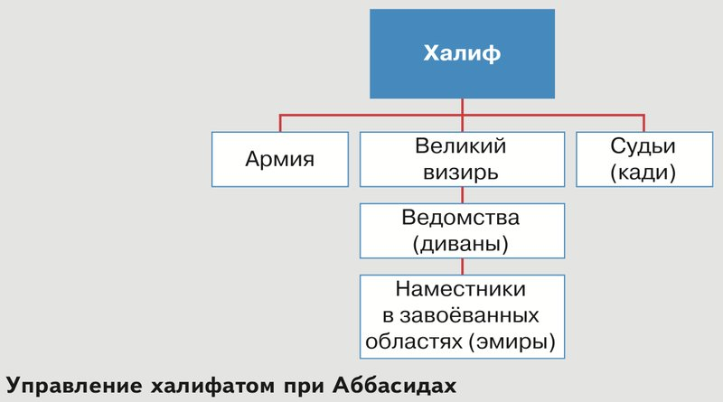
Подсказка к заданию у схемы
Читай схему сверху вниз, по линиям. Кто на самом верху? К кому идут три линии от него? Что стоит под великим визирем, а что под ведомствами? Кади — это судьи, так и подписано на схеме.
Чтобы ответить про визиря и кади, посмотри, соединены ли их квадраты линией напрямую или они оба подчиняются кому-то третьему.
Подробнее, как в учебнике · с. 62–63, п. 2
- Халифы получили огромную власть и богатство. Уже ничто не напоминало в них простых и скромных сподвижников пророка. Все подданные, от бедняка до богача, обязаны были падать перед халифом на колени и целовать перед ним землю. Повелитель мусульман мог возвысить простого воина или раба, а богача лишить власти, имущества и даже жизни.
- Под властью халифа находилось множество народов, говоривших на разных языках, имевших различные обычаи и различавшихся уровнем хозяйственного развития.
- При Аббасидах к управлению в халифате стали привлекать знать завоёванных стран. Так, поддержавшие потомков Аббаса персы получили высокие должности при дворе. За персидской знатью был закреплён титул великого визиря — помощника халифа, его первого министра.
- Схема на с. 63 «Управление халифатом при Аббасидах»: халиф; ему подчиняются армия, великий визирь и судьи (кади); великому визирю — ведомства (диваны); ведомствам — наместники в завоёванных областях (эмиры). Задание к схеме: с помощью схемы расскажите, как был устроен государственный аппарат в халифате Аббасидов. Какие полномочия были у великого визиря? Мог ли он вмешаться в решения, принятые кади? Имел ли власть над кади халиф?
2Эмиры и распад халифата
Завоёванными областями правили эмиры — наместники, которых назначал халиф. Со временем эмиры стали проводить свою, независимую политику.
Всё больше налогов они не отправляли халифу, а тратили сами: на войско, которым командовали, и на обустройство городов, в которых правили.
В начале IX века Арабский халифат начал распадаться на части. Эмиры сами вели государственные дела, а халиф оставался для них главным только в вопросах веры.
Но от ислама народы не отказались. Он распространился в Европе, Азии и Африке и стал мировой религией. Мусульмане из разных стран поддерживали связи друг с другом, даже когда их правители воевали между собой.
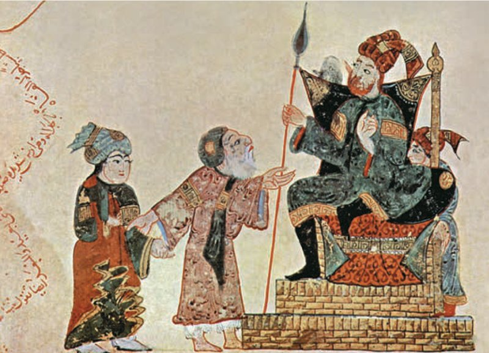
Почему эмиры перестали слушаться?
Халиф далеко, в Багдаде, а у эмира под рукой войско и собранные налоги. Посмотри на миниатюру: наместник сидит на высоком троне, как настоящий царь, а проситель стоит перед ним внизу. Такой правитель легко начинает думать, что может обойтись и без халифа.
Подробнее, как в учебнике · с. 63, п. 2 и с. 61
- Со временем назначенные халифом правители завоёванных областей — эмиры — стали проводить независимую политику. Всё большую и большую часть налогов, собранных с населения, эмиры стали не посылать халифу, а тратить на войско, которым командовали, и обустройство городов, в которых правили.
- В начале IX в. Арабский халифат начал распадаться на части. Эмиры самостоятельно вели государственные дела. Халиф являлся авторитетом для них только в религиозных вопросах.
- Распад халифата не означал, однако, отказа разных народов от новой веры. Распространившийся на территории Европы, Азии и Африки ислам стал мировой религией. Единоверцы из разных стран поддерживали связи между собой, несмотря на то что их правители порой воевали друг с другом.
- Иллюстрация на с. 61: «Наместник халифа и проситель». Миниатюра, XIII век. Подпись: в VII–VIII вв. образовалось огромное государство арабов — Арабский халифат. Владения халифата раскинулись от берегов Атлантического океана до границ Индии и Китая.
- Вопросы учебника после пункта 2: какие города были столицами мусульманской цивилизации при Мухаммеде, Омейядах и Аббасидах? Как со временем изменилась власть эмиров?
3Язык, школы и Дом мудрости
Мусульман из разных стран объединяла арабская письменность. Каждый верующий, какой бы он ни был национальности, должен был читать и цитировать Коран только по-арабски. Учились в особых школах — медресе.
Арабский язык стал общим для учёных и мудрецов, архитекторов и писателей, торговцев и военных. У мусульман он играл ту же роль, что латынь в Западной Европе и греческий язык в Византии.
В IX веке центром науки стал Багдад. Там был Дом мудрости: в нём трудились учёные со всего исламского мира, а в его библиотеке собрали огромное количество книг. Халифы не жалели денег на книги: они считали, что книги помогут проповедникам распространять ислам.
Учёные изучали не только религиозные труды, но и сочинения античных авторов: Платона, Аристотеля, Птолемея, Пифагора. Некоторые из этих книг европейцы узнали только благодаря арабским переводам. «Мостом» между арабской и христианской культурами стал Кордовский эмират — в лучшие времена он занимал большую часть современной Испании.
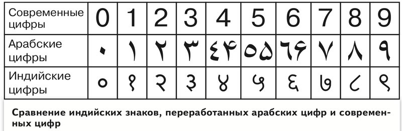
Десять знаков, которыми во многих странах записывают числа, называют арабскими цифрами: десятичная позиционная система счисления пришла в Европу из арабских стран. Но на самом деле мусульманские учёные создали свои цифры, переработав индийские знаки.
Подсказка к заданию у таблицы
Римские цифры — это буквы: I, V, X, L, C, D, M. Попробуй записать римскими цифрами число 1888, а потом сравни с привычной записью. Какая короче? Какими цифрами легче сложить два числа в столбик?
«Позиционная» значит, что значение цифры зависит от её места: в числе 505 первая пятёрка — это пять сотен, а последняя — просто пять.
Подробнее, как в учебнике · с. 64, п. 3
- Пункт 3 «Письменность, образование и научные знания у мусульман». Мусульман, проживающих в разных странах, объединяла арабская письменность. Все верующие в Аллаха, независимо от национальности, были обязаны читать и цитировать Коран только на арабском языке. Обучение происходило в специальных школах — медресе.
- В странах мусульманской цивилизации арабский язык стал средством межнационального общения учёных и мудрецов, архитекторов и писателей, торговцев и военных. Арабский язык выполнял у мусульман ту же роль, что латынь в Западной Европе и греческий язык в Византии.
- В IX в. центром мусульманской науки стал Багдад. Здесь находился Дом мудрости, в котором трудились учёные из разных уголков исламского мира. В библиотеке этого Дома было собрано огромное количество книг. Халифы не жалели денег на книги, считая, что они помогут проповедникам в распространении ислама.
- Учёные бережно хранили и внимательно изучали не только религиозные труды, но и сочинения античных авторов: Платона, Аристотеля, Птолемея, Пифагора. Некоторые из произведений этих авторов стали известны европейцам только благодаря их арабским переводам. Центром учёности, выполнявшим в Средневековье роль моста между арабской и христианской культурами, стал Кордовский эмират (в период расцвета занимал большую часть территории современной Испании).
- Таблица на с. 64 «Сравнение индийских знаков, переработанных арабских цифр и современных цифр»: три строки — современные цифры (0–9), арабские цифры, индийские цифры. Подпись: традиционно десять знаков, используемых во многих странах для записи чисел, называют арабскими цифрами. Такое название они получили из-за того, что десятичная позиционная система счисления пришла в Европу из арабских стран. Но на самом деле мусульманские учёные создали свои цифры на основе переработанных индийских знаков. Задание: вспомните, как выглядели римские цифры. Какими цифрами, по вашему мнению, пользоваться удобнее?
3Календарь, алгебра и Ибн Сина
Мусульманские учёные прославились и за пределами исламского мира. Среди них были врачи и философы, географы и математики, механики и астрономы.
Арабы составили точный лунный календарь. Им пользуются в мусульманских странах и сегодня.
Углублённую арифметику стали называть арабским словом алгебра. Первый учебник алгебры написал математик аль-Хорезми (780–850).
Во всём мире знали имя Ибн Сины (980–1037), уроженца Средней Азии. По его книге «Медицинский канон» учились врачи и в мусульманских, и в христианских странах. В Европе Ибн Сину называли Авиценной.
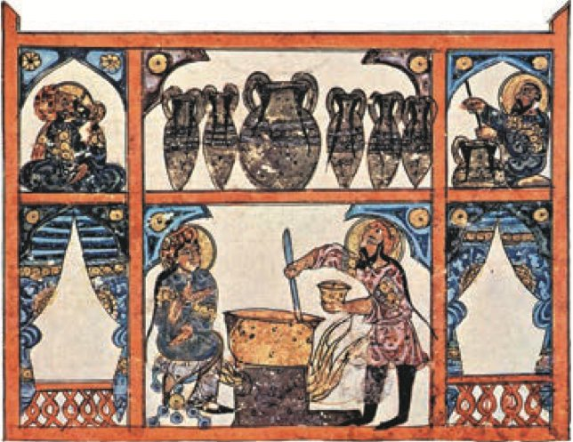
Он первым описал, чем различаются оспа, проказа и чума, и доказал, что этими болезнями можно заразиться через воздух, почву, воду и от других людей. Описал туберкулёз, язву желудка, диабет.
Лечить болезни, по Ибн Сине, нужно лекарствами, правильным питанием и режимом дня.
Подробнее, как в учебнике · с. 65, п. 3
- Широкую известность за пределами мусульманского мира получили и учёные: выдающиеся врачи и философы, географы и математики, механики и астрономы.
- Арабы составили точный лунный календарь, который используется в мусульманских странах и в наши дни. Углублённая арифметика стала называться арабским словом «алгебра». Первый учебник по этой дисциплине был написан математиком аль-Хорезми (780–850).
- Широко известно в мире было имя уроженца Средней Азии Ибн Сины (980–1037). Его книга «Медицинский канон» стала учебником для врачей не только в мусульманских, но и в христианских странах. В Европе Ибн Сину называли Авиценной.
- Иллюстрация на с. 65: «В арабской аптеке». Миниатюра, XIII век. Подпись: Ибн Сина впервые описал различия между оспой, проказой, чумой; доказал возможность заразиться этими болезнями через воздух, почву, воду, контакты между людьми; описал туберкулёз, язву желудка, диабет. К общим принципам лечения болезней Ибн Сина относил применение лекарств, питание и режим дня.
- Вопросы учебника после пункта 3: что позволяло учёным из разных стран общаться друг с другом? Назовите не менее двух причин. Каким образом труды исламских учёных становились известны европейцам?
4Фирдоуси и «Шах-наме»
Самые известные книги исламского мира написаны на арабском и персидском языках. Мусульманская литература была разнообразной, и создавали её люди разных народов.
По-персидски писал поэт Фирдоуси (935–1020). В поэме «Шах-наме» («Книга царей») он рассказал стихами историю Персии и Средней Азии.
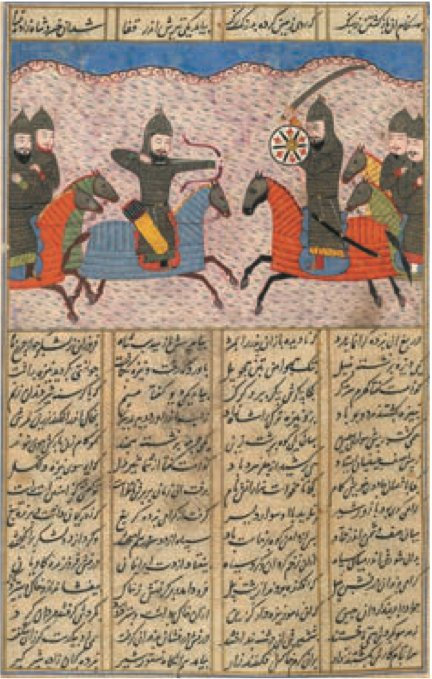
Подсказка к заданию у рисунка
Посмотри на рисунок вверху страницы. Кто на нём? На ком они сидят и что у них в руках? Что они делают друг с другом? А теперь вспомни, о чём вся поэма: «Книга царей», история Персии и Средней Азии.
Считается, что Фирдоуси умер в бедности. По легенде, султан в знак уважения отправил ему богатый караван с дарами. Но караван опоздал: когда он пришёл в город поэта, Фирдоуси уже провожали в последний путь.
Подробнее, как в учебнике · с. 65–66, п. 4
- Пункт 4 «Литература мусульманских стран». Наиболее известные произведения литературы создавались в исламском мире на арабском и персидском языках. Мусульманская литература была многогранной и многонациональной.
- На персидском языке писал поэт Фирдоуси (935–1020). В поэме «Шах-наме» («Книга царей») он в стихотворной форме изложил историю Персии и Средней Азии.
- Иллюстрация на с. 65: «Страница из поэмы „Шах-наме“». Персидская рукопись, XV век. Подпись: считается, что Фирдоуси умер в бедности. Согласно легенде, султан в знак своего почтения выслал ему богатый караван с дарами. Но когда караван прибыл в город поэта, его тело вывозили за ворота для погребения. Задание: рассмотрите иллюстрацию. Предположите, о каких событиях рассказывается на данной странице поэмы.
4Омар Хайям и «Тысяча и одна ночь»
В Персии родился Омар Хайям (1048–1131). Он писал труды по математике и астрономии. Но прославили его не научные книги, а рубаи — короткие поучительные стихи из четырёх строк (в учебнике — «назидательные четверостишия»).
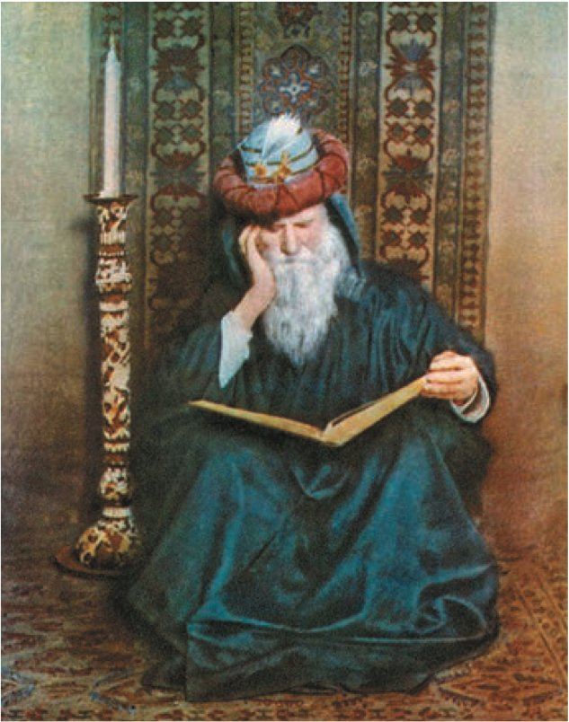
Подсказка к заданию у портрета
Посмотри на позу, лицо, на то, что у него в руках и вокруг. Как обычно рисуют учёного: с приборами, чертежами, картой звёздного неба? А как поэта: задумчивым, с книгой? Выбери свой ответ и назови две-три приметы на картине, которые его подтверждают.
Всемирная слава пришла к Омару Хайяму во второй половине XIX века. Английский аристократ Э. Фицджеральд, увлечённый Востоком, перевёл и издал книгу его стихов. Любители стихов Хайяма стали даже собираться в клубы, а его рубаи перевели на множество языков, в том числе на русский.
Но самой известной книгой мусульманской литературы стал сборник сказок «Тысяча и одна ночь». В него вошли арабские, персидские, греческие и индийские истории и легенды, которые мусульмане пересказали по-своему и перенесли их действие в халифат.
Среди героев есть выдуманные — Аладдин, Али-Баба, Синдбад-мореход — и настоящие люди, например халиф Харун ар-Рашид.
Подробнее, как в учебнике · с. 66, п. 4
- В Персии родился автор работ по математике и астрономии Омар Хайям (1048–1131). Однако мировую известность ему принесли вовсе не научные труды, а короткие назидательные четверостишия — рубаи.
- Иллюстрация на с. 66: «Омар Хайям». Художник А. Лисон, 1905 г. Подпись: всемирная слава пришла к Омару Хайяму через много столетий, во второй половине XIX в. Английский аристократ Э. Фицджеральд, увлечённый востоковедением, перевёл и опубликовал книгу его стихов. Популярность древнего автора стала настолько огромной, что любители его творчества организовывали клубы, а его стихи были переведены на множество языков (в том числе и на русский). Задание: как вы считаете, художник изобразил Омара Хайяма учёным или поэтом? Аргументируйте свою точку зрения.
- Однако самым известным из произведений мусульманской литературы стал сборник сказок «Тысяча и одна ночь». В книгу вошли переработанные мусульманами арабские, персидские, греческие, индийские истории и легенды, действие которых было перенесено в халифат. Героями сказок были как выдуманные персонажи — Аладдин, Али-Баба, Синдбад-мореход, так и реально существовавшие люди, например халиф Харун ар-Рашид.
- Вопросы учебника после пункта 4: различались ли в мусульманском мире языки науки и литературы? Назовите наиболее известные литературные произведения мусульманского мира и их авторов.
5Как устроена мечеть
Города халифата славились красивыми зданиями. Гордостью любого поселения была мечеть — здание со священным залом на участке, огороженном от внешнего мира стенами или колоннами.
Перед входом в мечеть мусульмане снимают обувь и совершают омовение. Потом молятся на коленях, повернувшись лицом к Мекке.
Направление на священный город указывает михраб — особая ниша в одной из стен зала. Мусульмане считают, что михраб нужен для отражения Божественного Слова. А ещё ниша усиливает голос проповедника, который читает молитву.
Стены внутри мечети расписывали изречениями из Корана, для отделки часто брали разноцветные кирпичи и глазурь. Рядом с мечетью строили высокую узкую башню — минарет. С неё верующих призывали на молитву.
Подробнее, как в учебнике · с. 66–67, п. 5
- Пункт 5 «Исламская архитектура». Города халифата отличались богатой архитектурой. Гордостью любого поселения была мечеть. Она представляла собой здание со священным залом, расположенное на участке, огороженном от внешнего мира стенами или колоннами. Во внутреннем дворе размещался фонтан для омовения. Позднее под влиянием Византии и Персии над зданием мечети стали сооружать купол.
- Подробнее. Перед входом в мечеть мусульмане снимают обувь и совершают омовение. Затем, опустившись на колени, молятся, обратившись лицом к Мекке. Направление священного города указывает михраб — специальная ниша в одной из стен зала. Мусульмане считают, что михраб нужен для отражения Божественного Слова. Ниша имеет акустический эффект: она усиливает громкость голоса проповедника, читающего молитву.
- Внутреннее помещение мечети расписывали изречениями из Корана. Для отделки помещений часто использовали разноцветные кирпичи и глазурь. Рядом с мечетью сооружали высокую узкую башню — минарет. С неё верующих призывали на молитву.
5Купол скалы в Иерусалиме
Каждый халиф и эмир старался превзойти того, кто правил до него, и построить мечеть ещё лучше. Так появились знаменитые образцы мусульманской архитектуры на Ближнем Востоке, в Северной Африке, Испании, Иране, Средней Азии и в других краях.
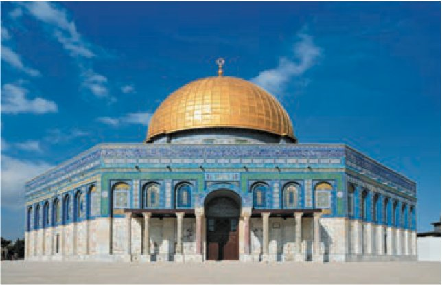
Подсказка к заданию у фотографии
Перечитай прошлый шаг: из чего состоит мечеть и чем её украшали? Теперь найди эти приметы на фотографии: что над зданием, чем покрыты стены, какой формы окна и вход?
Согласно преданию, в мечети Куббат ас-Сахра находится Краеугольный камень, или Камень основания. Говорят, что, опираясь на него, Бог отделил воды небесные от вод земных.
С этим камнем связаны многие важные события Ветхого Завета у иудеев. А по учению мусульман, именно с него вознёсся на небо пророк Мухаммед.
Подробнее, как в учебнике · с. 67, п. 5
- Каждый халиф и эмир стремился превзойти предшественника в строительстве мечетей. Так создавались образцы архитектуры мусульманской цивилизации на Ближнем Востоке, в Северной Африке, Испании, Иране, Средней Азии и других регионах мира.
- Иллюстрация на с. 67: «Мечеть Куббат ас-Сахра (Купол скалы) в Иерусалиме». VII век, современный вид. Подпись: согласно преданию, в мечети Куббат ас-Сахра сокрыт Краеугольный камень, или Камень основания. Якобы, опираясь именно на него, Бог отделил воды небесные от вод земных. Многие важные события Ветхого Завета у иудеев связаны с Краеугольным камнем. А согласно учению мусульман, именно с него вознёсся на небо пророк Мухаммед. Задание: рассмотрите изображение и назовите не менее трёх элементов, характерных для мечети.
5Мавританская архитектура
Традиции разных стран и народов переплелись в мавританской архитектуре. Она распространилась на Пиренейском полуострове и в Северной Африке.
В мавританских постройках соединялись колонны и арки, как в античных зданиях, причудливая резьба по камню и узоры из разноцветной плитки. Самая известная такая постройка — Соборная мечеть в Кордове.
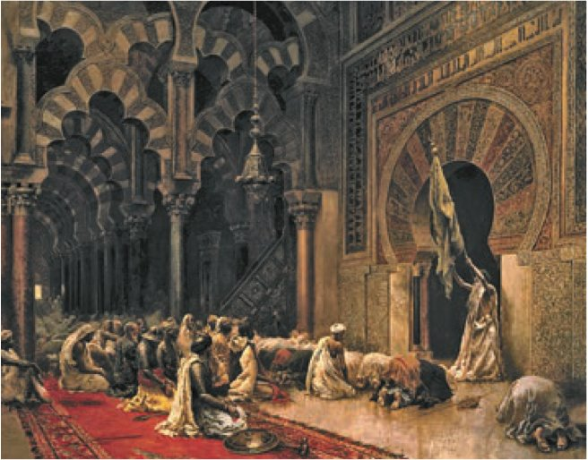
Подсказка к заданию у картины
Вспомни, что соединялось в мавританских постройках (текст выше), и найди это на картине: чего в зале очень много, какой раскраски арки? Чтобы найти михраб, вспомни шаг 11: это ниша в стене. Куда обращены лица молящихся?
Мавританская архитектура названа так потому, что на Пиренейском полуострове и в Северной Африке жили мавры. Так христиане называли мусульманских завоевателей. Слово пришло из греческого языка и значит «тёмный».
Кроме мечетей, в мусульманских городах строили дворцы, караван-сараи, мавзолеи (гробницы), крытые торговые ряды, бани. Архитекторы должны были всё точно рассчитать, а строители — очень хорошо знать своё дело.
Подробнее, как в учебнике · с. 67–68, п. 5
- Примером переплетения традиций разных стран и народов стала мавританская архитектура, получившая распространение на Пиренейском полуострове и в Северной Африке. Для мавританских построек было характерно сочетание элементов античной архитектуры (колонн, арок) с причудливой каменной резьбой и узорами из разноцветной плитки. Самой известной постройкой такого рода стала Соборная мечеть в Кордове.
- Иллюстрация на с. 67: «Интерьер соборной мечети в Кордове». Художник Э. Уикс, 1880 г. Подпись: мавританская архитектура получила своё название благодаря тому, что на территории Пиренейского полуострова и Северной Африки проживали мавры. Так христиане называли мусульманских завоевателей (от греч. «тёмный»). Задание: какие элементы указывают на принадлежность здания к мавританским постройкам? Где на изображении расположен михраб?
- Кроме мечетей, в мусульманских городах строили дворцы, караван-сараи, мавзолеи, крытые торговые ряды, бани и другие сооружения. Возведение архитектурных сооружений требовало от мусульманских архитекторов точного расчёта, а от строителей — большого мастерства.
- Вопросы учебника после пункта 5: что такое мечеть? Как она была устроена? Какие здания, помимо мечетей, возводили в мусульманских городах?
6Каллиграфия и арабески
Ислам запрещает изображать или высекать из камня фигуры пророка и других людей: считается, что такие произведения похожи на языческих идолов. Это правило соблюдали не все и не всегда (вспомни миниатюры с людьми в этом параграфе), но внутри мечети изображений людей нет.
Стены священных залов украшают затейливые надписи из Корана. Из них родилось особое искусство красивого письма — каллиграфия. Художники мусульманских стран достигли в нём большого мастерства.
Строки Корана в мечетях часто окружали узорами из причудливых линий или ветвей растений, да и сами надписи становились похожими на узоры. Такой искусный восточный орнамент европейцы назвали арабески.
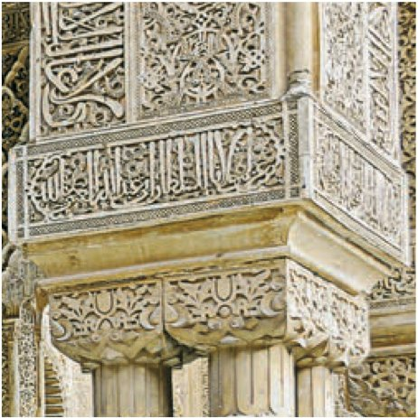
Где тут надпись, а где узор?
Посмотри на широкую полосу посередине картинки: вертикальные чёрточки и петли — это буквы арабской вязи, то есть каллиграфия. А вокруг — завитки и листья, это арабески. Видишь, как трудно понять, где кончается надпись и начинается узор?
Подробнее, как в учебнике · с. 68, п. 6
- Пункт 6 «Изобразительное и декоративно-прикладное искусство». Ислам запрещает изображать или высекать из камня фигуры пророка и других людей. Считается, что такие произведения подобны языческим идолам. Эти правила соблюдались не всеми и не всегда, однако внутри мечети изображений людей нет.
- Стены священных залов украшают затейливо выполненные надписи из Корана. Создание надписей породило особое искусство — каллиграфию, в которой художники мусульманских стран достигли большого мастерства.
- Иллюстрация на с. 68: «Арабески и арабская каллиграфия». Альгамбра, XII век, современный вид. Подпись: зачастую строки Священной книги в мечетях окружались узорами из причудливых линий или ветвей растений, да и сами надписи становились похожими на узоры. Такой искусно выполненный восточный орнамент европейцы назвали арабески.
6Мастера исламского Востока
Орнамент был повсюду: в резьбе по камню и дереву, в узорах персидских ковров.
Ремесленники исламского Востока довели до совершенства мебель, посуду, ларцы, ткани, одежду и оружие. Вещи делали по традициям разных народов халифата, и ими до сих пор восхищаются ценители во всём мире. Такое искусство украшать нужные в жизни вещи называют декоративно-прикладным.
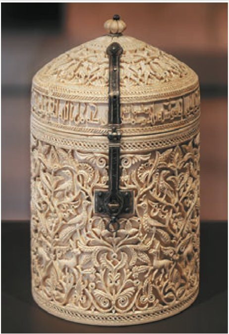
Подсказка к заданию у шкатулки
Рассмотри полоску под крышкой и узор на стенках. Что из прошлого шага ты там узнаёшь? А про мастера представь: сколько дней нужно вырезать такие мелкие завитки и не ошибиться ни разу?
Кордовский эмират из шага 7 и Кордовский халифат здесь — одно и то же государство в Испании, только в разное время: в X веке правитель Кордовы объявил себя халифом.
Благодаря Арабскому халифату ислам распространился далеко за пределы Аравии и стал мировой религией. Вера, образ жизни, который она требует, и достижения науки, литературы и искусства мусульманских стран надолго пережили сам халифат.
Подробнее, как в учебнике · с. 68–69, п. 6 и «Подведём итоги»
- Иллюстрация на с. 68: «Шкатулка». Кордовский халифат, X век. Задание: какие элементы украшения шкатулки позволяют отнести её к произведениям мусульманского искусства? Как вы думаете, каких качеств требовало от мастера изготовление такой шкатулки?
- Орнамент использовался всюду: от резьбы по камню и дереву до узоров на персидских коврах. Ремесленники исламского Востока довели до совершенства изготовление мебели, посуды, ларцов, тканей, одежды и оружия. Эти образцы декоративно-прикладного искусства, выполненные в соответствии с культурными традициями разных народов, входивших в состав халифата, и по сей день восхищают ценителей во всём мире.
- Вопросы учебника после пункта 6: почему в странах мусульманской цивилизации не получила широкого развития портретная живопись? Объясните значения слов «арабеска» и «каллиграфия».
- «Подведём итоги»: создание Арабского халифата позволило исламу распространиться за пределы Аравии. Ислам стал мировой религией. Вера, образ жизни, предписываемый ею, достижения науки, литературы и искусства мусульманских стран надолго пережили халифат.
Словарик: власть и вера
ИграНажми на карточку, и она перевернётся. Словарик из трёх частей, открой все карточки.
Словарик: наука и книги
ИграВторая часть: школы, книги и открытия.
Словарик: мечеть и узоры
ИграТретья часть: архитектура и искусство.
Слова с секретом
ИграУ каждого из этих слов есть перевод или история. Нажми на слово слева, потом на его разгадку справа.
Кто раньше?
ИграУчёные, поэты и правители жили в разное время. Нажимай на события от самого раннего к самому позднему. Даты спрятаны, вспоминай сама.
Найди лишнее
ИграТри из одной компании, одно чужое. Найди чужое.
Проверь себя
Вопросы из учебника
Это вопросы и задания в конце параграфа, номера такие же, как в твоём учебнике. Рядом с каждым написано, на каком шаге искать ответ. Отвечай своими словами: так лучше запоминается, и учитель услышит, что ты поняла, а не заучила.
Рассмотрите иллюстрацию в начале параграфа. Как изменилась власть главы исламского государства по сравнению с периодом правления праведных халифов? Почему халифу потребовалось создавать сложный государственный аппарат?
Подсказка: вспомни, как жили праведные халифы (§ 5), и прочитай, что делали подданные перед халифом при Аббасидах. На миниатюре посмотри, как сидит наместник и как стоит проситель. Про «аппарат» подумай: сколько земель и народов было под властью халифа?
Шаги 5–6 · Власть халифа § 5 · Праведные халифыЧто способствовало созданию Арабского халифата? Назовите не менее двух причин.
Подсказка: вспомни § 5 — что объединило арабов и почему их войско побеждало. А начало шага 3 расскажет, откуда взялось само название «халифат».
§ 5 · Джихад и войско Шаг 3 · Сунниты и шиитыРассмотрите карту 8 (см. Приложение). Выделите этапы расширения территории халифата. Какие территории были присоединены на каждом из этапов? Назовите даты и места крупнейших побед и поражений арабов.
Подсказка: карта 8 «Завоевания арабов в VII–IX вв. Арабский халифат» — в Приложении в конце учебника, на с. 243. Этапы удобно делить по правителям: Мухаммед, праведные халифы (§ 5), Омейяды, Аббасиды (шаг 4). Битвы ищи на карте и в тексте § 5 и § 6, а про одно поражение арабов в Европе ты читала в § 3.
Шаг 4 · Омейяды и АббасидыВ каких частях света были расположены земли, оказавшиеся под властью халифа? Как завоевания арабов способствовали превращению ислама в мировую религию?
Подсказка: куда дошли завоевания — шаг 4 и подпись к миниатюре на шаге 6. Про мировую религию — конец шага 6 и «Подведём итоги» на шаге 15.
Шаги 4 и 6 Шаг 15 · Подведём итогиЧто привело к расколу в исламе? Почему этот раскол существует и по сей день?
Подсказка: с чего всё началось и о чём был спор? Подумай, могли ли стороны договориться, если каждая считала правильным свой ответ на главный вопрос. Звёздочка в учебнике — задание посложнее.
Шаг 3 · Сунниты и шиитыВ чём заключались причины распада Арабского халифата? Назовите не менее трёх причин.
Подсказка: перечитай шаги 5 и 6 и ищи: сколько разных народов, языков и обычаев было в халифате; что эмиры стали делать с налогами и войском; какая власть осталась у халифа.
Шаг 5 Шаг 6 · Эмиры и распадЧто объединяло учёных и способствовало развитию мусульманской науки, несмотря на распад халифата?
Подсказка: на каком языке читали и писали учёные? Где собирали книги? Что осталось общим у мусульман разных стран, когда государство распалось (конец шага 6)?
Шаг 7 · Язык, школы, Дом мудростиПриведите примеры того, как в литературе и искусстве мусульманских стран происходило переплетение различных стилей, жанров и традиций.
Подсказка: из историй каких народов собрана «Тысяча и одна ночь» (шаг 10)? Что соединилось в мавританской архитектуре (шаг 13)? Под чьим влиянием над мечетями появился купол (шаг 11)?
Шаг 10 Шаг 13 · Мавританская архитектураПрочитайте п. 3 и 4 параграфа и заполните таблицу «Деятели мусульманской науки и культуры».
| Отрасль науки или культуры | Имя деятеля науки или культуры | Его вклад в мировую науку или культуру |
|---|---|---|
Подсказка: пункты 3 и 4 — это шаги 7–10. Выпиши всех, кто назван там по имени, и для каждого — в какой области он работал и что сделал. Строк в таблице будет несколько. Начерти таблицу в тетради.
Шаги 8–10Работаем с хронологией. Расположите события в хронологическом порядке: 1) начало правления династии Омейядов; 2) падение династии Аббасидов; 3) смерть халифа Али; 4) Таласская битва.
Подсказка: все годы есть на ленте времени (шаг 2) и в шагах 3–4. Выпиши год к каждому событию и расставь по возрастанию. У двух событий один и тот же год — подумай, что из них случилось сначала.
Шаг 2 · ДатыРаботаем с источником. Прочитайте отрывок из статьи литературоведа И. Фильштинского и ответьте на вопросы.
«Исторический Харун ар-Рашид правил в Багдаде с 786 по 809 г. и, насколько можно судить о нём по историческим источникам, вовсе не был похож на легендарного халифа, изображённого в сказках Шахразады. Он не только не бродил по ночному Багдаду, как это изображено в „Тысяче и одной ночи“, но, напротив, значительную часть жизни провёл в загородной резиденции, избегая встречи с народом, которого боялся. Реальный Харун ар-Рашид не вошёл в историю как выдающийся правитель. Но его правление пришлось на годы экономического процветания и блестящей культуры и было для Багдада последним мирным царствованием, поскольку при его преемниках уже начались гражданские войны и былое политическое единство халифата стало разрушаться».
Вопросы: 1. Определите, к какой династии принадлежал халиф Харун ар-Рашид. 2. Как описывалось поведение халифа в сказках «Тысяча и одна ночь» и каким оно было в реальной действительности? 3. Почему именно халиф Харун ар-Рашид стал героем арабских сказок?
Подсказка: 1) сравни годы его правления с годами династий на шаге 2 и вспомни, какая династия правила из Багдада. 2) Найди в отрывке, что говорят сказки и что было на самом деле. 3) Ищи ответ в последнем предложении отрывка: какими были годы его правления для Багдада? «Резиденция» — дом, где живёт правитель; «преемники» — те, кто правил после него.
Шаг 10 · сказки Шаг 2 · ДатыРаботаем с понятиями. Разделите понятия на группы и объясните, по какому принципу вы это сделали: мечеть, эмир, халиф, минарет, Коран, кади.
Подсказка: сначала вспомни, что значит каждое слово (словарики на шагах 16 и 18; Коран и халиф — § 5). Потом задай каждому слову вопрос «кто это или что это?» и объедини похожие. Главное — объяснить свой принцип.
Шаг 16 · Словарик Шаг 18 · СловарикДополнительные материалы. «Учителю и ученику». Материалы к параграфу на портале «История.РФ».
В учебнике рядом есть QR-код: наведи на него камеру телефона, если захочешь посмотреть.
Сформулируйте ответ на главный вопрос параграфа, обоснуйте его двумя-тремя аргументами.
Шаг 26 · Главный вопросПодробнее, как в учебнике · с. 69–70
- Все вопросы и задания страниц 69–70 перечислены выше, в том же порядке, что в книге: «Вопросы и задания» 1–9 (вопрос 5 со звёздочкой, к вопросу 9 — пустая таблица из трёх столбцов), «Работаем с хронологией», «Работаем с источником», «Работаем с понятиями», «Дополнительные материалы», главный вопрос параграфа.
Итоги главы: мусульманская цивилизация
§ 5 и § 6 вместе — это глава II учебника «Мусульманская цивилизация в VII–XI вв.». После § 6 учебник подводит итоги всей главы. Вот они простыми словами:
- В начале VII века в Аравии родилась самая молодая из мировых религий — ислам.
- Арабы завоевали большие земли в Южной Европе, Западной Азии и Северной Африке. Так появилось самое могущественное государство раннего Средневековья — Арабский халифат.
- Покорённые народы объединяли власть халифа и ислам. Ислам влиял на всё: управление, законы, хозяйство, общество и культуру.
- Халифат распался, но общность народов, связанных верой и культурой, — мусульманская цивилизация — продолжила жить.
- Одна вера и переплетение традиций разных народов создали особую мусульманскую науку и культуру. Её достижения важны и сегодня.
А начинается глава на с. 51 фотографией и словами историка. К ним относятся вопросы 1 и 2 к главе (следующий шаг).
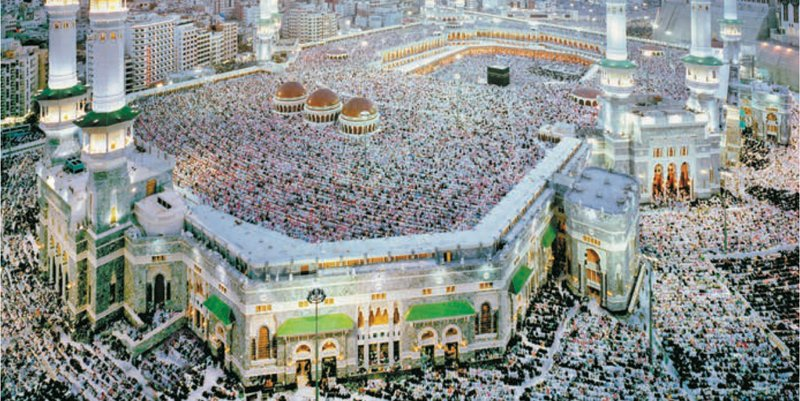
Мекка в Саудовской Аравии — одно из главных мест религиозного паломничества. В мечети аль-Харам находится главная святыня ислама — Кааба, чёрное сооружение в форме куба.
«Ислам сыграл огромную роль в истории и культуре не только арабов, его первых и основных адептов, но и всех народов ближневосточного региона, а также иранцев, тюрков, индийцев, индонезийцев, многих народов Средней Азии, Кавказа, Поволжья, Балкан, значительной части населения Африки. В результате арабского завоевания и под прямым воздействием ислама складывались не только судьбы народов, но и их культурные традиции, идейный багаж, нормы быта и морали, мифопоэтические и эпические образы и предания, которые и сегодня во многом определяют их жизнь». Л. Васильев, историк.
Трудные слова в эпиграфе
- Адепты — последователи, приверженцы какого-то учения.
- Идейный багаж — взгляды и идеи, которые у народа есть «с собой», как вещи в багаже.
- Нормы быта и морали — как принято жить каждый день и что считается хорошим, а что плохим.
- Мифопоэтические и эпические образы — герои мифов, легенд, сказаний и поэм.
Какие черты мусульманской цивилизации роднят её с европейской, а какие отличают от неё?
Подробнее, как в учебнике · с. 51, 71–72
- С. 51 — заставка главы II «Мусульманская цивилизация в VII–XI вв.».
- Фотография на с. 51: «Мечеть аль-Харам в Мекке». Современный вид. Подпись: один из главных объектов религиозного паломничества — город Мекка в Саудовской Аравии. В мечети аль-Харам находится главная святыня ислама — Кааба, сооружение кубической формы чёрного цвета. Согласно Корану, Каабу построили ангелы, а место строительства им указал Аллах (так написано в подписи).
- Эпиграф — слова историка Л. Васильева, полностью приведены выше. Главный вопрос главы: какие черты мусульманской цивилизации роднят её с европейской, а какие отличают от неё?
- «Итоги главы» (с. 71): в начале VII в. на Аравийском полуострове родилась самая молодая из мировых религий — ислам. В результате арабских завоеваний значительные территории в Южной Европе, Западной Азии и Северной Африке вошли в состав могущественнейшего государства раннего Средневековья — Арабского халифата. Завоёванные народы объединяли власть халифа и ислам, который оказал влияние на все сферы жизни: управление, законодательство, хозяйство, общество и культуру. Несмотря на распад Арабского халифата, образовавшаяся религиозная и культурная общность народов — мусульманская цивилизация — продолжила своё существование. Единая религия и переплетение традиций разных народов создали уникальную мусульманскую науку и культуру, достижения которой не утратили своего значения и поныне.
- «Вопросы и задания к главе» (с. 71) — на следующем шаге.
- «Темы проектов» (с. 72): с помощью ресурсов Интернета или дополнительной литературы подготовьте рассказ с электронной презентацией (не менее 7 слайдов) на одну из тем: 1) Вооружение и военное искусство средневековых арабов. 2) Открытия арабских учёных, которыми мы пользуемся сегодня. 3) Мусульманская мечеть: её архитектурные элементы и их связь с богослужением. Выступите с подготовленной презентацией перед классом.
- «Дополнительные материалы» (с. 72), фильмы: 1) «Багдадский вор», худ. фильм, реж. Л. Бергер, М. Пауэлл, Т. Уэлан, 1940 г.; 2) «Седьмое путешествие Синдбада», реж. Н. Юран, 1958 г.; 3) «Волшебная лампа Аладдина», реж. Б. Рыцарев, 1966 г.; 4) «Рустам и Сухраб», реж. Б. Кимягаров, 1971 г.; 5) «Сказание о Рустаме», реж. Б. Кимягаров, 1971 г.; 6) «Сказание о Сиявуше», реж. Б. Кимягаров, 1976 г.; 7) «Учителю и ученику» — материалы к главе на портале «История.РФ».
- Научно-популярная литература: Дэвид Н. «Мир ислама»; Панова В., Вахтин Ю. «Жизнь Мухаммеда».
- Художественная литература: Соловьёв Л. «Повесть о Ходже Насреддине»; сказки «Аладдин и волшебная лампа», «Али-Баба и сорок разбойников», «Приключения Синдбада-морехода»; героический эпос армянского народа «Давид Сасунский».
- Рекомендуем посетить: Государственный Эрмитаж (Санкт-Петербург); Государственный музей Востока (Москва); Казанский Кремль (Казань, Республика Татарстан); Елабужский государственный историко-архитектурный и художественный музей-заповедник (Елабуга, Республика Татарстан). В учебнике у них QR-коды.
Вопросы к главе
Эти вопросы — по всей главе, то есть по § 5 и § 6. Номера как в учебнике. Ссылки ведут и на шаги этой страницы, и на страницу § 5.
Рассмотрите иллюстрацию в начале главы и расскажите, какую роль и почему играет у мусульман мечеть аль-Харам.
Подсказка: что находится внутри этой мечети? Куда и зачем едут паломники — вспомни пятый столп ислама. Про мечеть аль-Харам и заповедную зону вокруг неё — в § 5.
Шаг 24 · фото § 5 · Возвращение в Мекку § 5 · Пять столповПрочитайте эпиграф к главе. Какие регионы и народы составили исламскую цивилизацию? Как, по мнению историка Л. Васильева, ислам повлиял на судьбу этих народов?
Подсказка: эпиграф и объяснение трудных слов — на шаге 24. Регионы и народы выпиши прямо из цитаты. Как повлиял — ищи во втором предложении цитаты и перескажи своими словами.
Шаг 24 · Итоги главы IIКакие положения исламского вероучения позволили новой религии распространиться на столь большие территории? В чём сходство раннего ислама и раннего христианства?
Подсказка: к чему призывал Мухаммед, во что верили мусульмане и что обещало учение верующим — § 5, шаги 6 и 9. О раннем христианстве вспомни § 1. Подумай, сколько богов, есть ли священная книга, кого называли пророками.
§ 5 · Пророк Мухаммед § 5 · Коран и СуннаКаким было отношение деятелей мусульманской культуры к античному наследию?
Подсказка: чьи сочинения изучали и хранили учёные и что стало с некоторыми из этих книг в Европе?
Шаг 7 · Язык, школы, Дом мудростиСравните причины, по которым произошёл распад Арабского халифата и империи Карла Великого.
Подсказка: причины распада халифата — шаги 5–6. Про распад империи Карла Великого — § 3, Верденский раздел. Сравни: жили ли в державе разные народы, кто на местах переставал слушаться главного правителя, была ли общая вера?
Шаг 6 · Эмиры и распадКакие занятия жителей составляли основу хозяйственной жизни стран мусульманской цивилизации? Различалось ли хозяйство мусульманских стран, Европы и Византии?
Подсказка: скотоводство, земледелие в оазисах, караванная торговля и города — § 5, шаги 3–4; ремёсла — шаг 15 этой страницы. Хозяйство Византии — в § 2, Европы — в § 3–4. Найди, что похоже, а что нет.
§ 5 · Оазисы, караваны, Мекка Шаг 15 · МастераДокажите, что культура арабов и культура завоёванных ими народов обогащали друг друга. Что сделало возможным такое взаимообогащение?
Подсказка: что взяли мусульмане у других народов (цифры, книги античных авторов, купол мечети, сказки) и что благодаря им узнала Европа? Шаги 7, 10, 11, 13. А что помогало людям разных народов понимать друг друга — вспомни про общий язык.
Шаг 7 Шаг 13Каково было отношение Мухаммеда и мусульман к христианству и иудаизму? Что Мухаммед имел в виду, называя последователей этих религий «людьми Писания»?
Подсказка: каких пророков до себя называл Мухаммед (§ 5, шаг 6)? Как мусульмане поступали с иудеями и христианами на завоёванных землях (§ 5, шаг 14)? «Писание» — это священная книга. Подумай, есть ли священные книги у иудеев и христиан.
§ 5 · Пророк Мухаммед § 5 · Подданные халифаСформулируйте ответ на главный вопрос главы и обоснуйте его двумя-тремя аргументами.
Главный вопрос главы: какие черты мусульманской цивилизации роднят её с европейской, а какие отличают от неё? Подсказка: вспомни Европу из § 1–4 и сравни по порядку: вера в единого Бога и священная книга; язык учёных (латынь или арабский); кто глава веры, а кто глава государства; как распадались большие державы; какие были храмы и как их украшали. Найди два-три сходства и два-три отличия.
Шаг 24 · Итоги главы IIПодробнее, как в учебнике · с. 71
- Все девять «Вопросов и заданий к главе» и задание «Сформулируйте ответ на главный вопрос главы и обоснуйте его двумя-тремя аргументами» перечислены выше, в том же порядке, что в книге.
Что разрушило халифат, но помогло культуре?
Это главный вопрос параграфа: что оказалось разрушительным для Арабского халифата, но благоприятным для развития мусульманской культуры? Вспомни большой двор из первого шага. Вот четыре «кирпичика» для ответа. Открой их, а потом попробуй ответить своими словами, не подглядывая.
Огромные размеры халифата, где жили многие народы с разными языками и обычаями, и самостоятельность эмиров разрушили единое государство, но та же встреча разных народов и соперничество правителей, объединённых исламом и арабским языком, сделали мусульманскую культуру богатой и разнообразной.